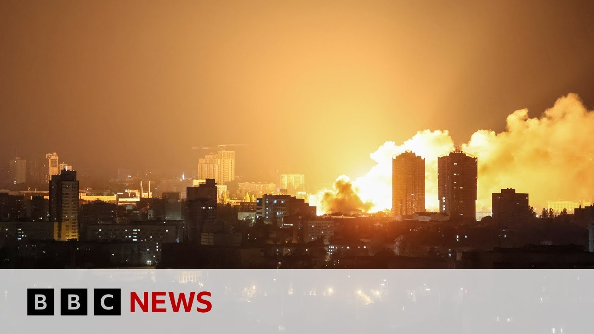

【乌克兰称俄罗斯袭击基辅造成三人死亡 | BBC新闻】
Summary: Russia launched a massive overnight attack on Ukraine, firing over 400 drones and 40 missiles, killing at least three rescue workers in Kyiv and wounding 40 nationwide. Ukraine preemptively struck Russian airfields and fuel depots, while Russia framed the assault as retaliation for Ukrainian drone attacks on its bomber planes.
摘要： 俄罗斯对乌克兰发动大规模夜间袭击，发射了400多架无人机和40枚导弹，在基辅造成至少三名救援人员死亡，全国40人受伤。乌克兰先发制人打击了俄罗斯机场和燃料库，而俄罗斯称此次袭击是对乌克兰无人机攻击其轰炸机的报复。

⏱️ Estimated Reading Time: 4 min
📚 高考3500生词 📚 雅思生词 📚 托福生词 📚 GRE生词 📚 UP主推荐生词
Russia fired more than 400 drones and 40 missiles at Ukraine overnight.
俄罗斯夜间向乌克兰发射了400多架无人机和40枚导弹。
That's according to President Vadimir Zalinski.
这是根据总统弗拉基米尔·泽连斯基的说法。
Ukraine's military says that it preempted the attack by hitting Russian airfields and fuel reservoirs.
乌克兰军方表示，他们通过打击俄罗斯机场和燃料库先发制人地阻止了袭击。
While Ukrainian state emergency services said that at least three rescue workers were killed in Russia's attack on Kev and around 40 people were wounded across the country.
而乌克兰国家紧急服务部门表示，俄罗斯对基辅的袭击造成至少三名救援人员死亡，全国约40人受伤。
The attacks also targeted other major cities and also the west of the country.
袭击还针对其他主要城市以及该国西部地区。
They happened a day after President Putin said he'd retaliate against Ukraine for the drone attacks that destroyed or damaged dozens of Russian strategic bomber planes.
此次袭击发生在普京总统表示将对乌克兰无人机攻击其数十架战略轰炸机进行报复的一天后。
Let's cross over live to Ke because our diplomatic correspondent Paul Adams joins us live now.
让我们连线基辅，因为我们的外交记者保罗·亚当斯正在现场。
And Paul, another difficult night for Ukraine, but my understanding is that Ukrainians don't appreciate calling this a retaliation by Russia for their attack because obviously they are at war.
保罗，对乌克兰来说又是一个艰难的夜晚，但据我了解，乌克兰人不认为这是俄罗斯对他们袭击的报复，因为他们显然处于战争中。
They were the ones who were attacked by Russia in that full-scale invasion three years ago.
三年前，他们是遭到俄罗斯全面入侵的一方。
Yeah. They rather roll their eyes when they hear people warning of retaliation, as Donald Trump indeed has done over the last uh day or two, saying that things would not be pretty following his conversation with Vladimir Putin.
是的，当他们听到人们警告报复时，他们会翻白眼，就像唐纳德·特朗普最近一两天所做的那样，称他与弗拉基米尔·普京的谈话后情况不会好看。
It's worth remembering that a week ago before uh the large uh audacious Ukrainian attack on Russian airfields uh the Russians sent 472 drones in a single night over Ukraine.
值得记住的是，一周前，在乌克兰大胆袭击俄罗斯机场之前，俄罗斯曾在一夜之间向乌克兰发射了472架无人机。
That was the largest single figure of the war so far.
这是迄今为止战争中单日最高数字。
So this is part of a of a continuum.
所以这是一系列事件的一部分。
It's not really an escalation.
这并不是真正的升级。
The people here of Kiev have experienced many, many, many nights just like the one we had last night.
基辅的居民已经经历了许许多多像昨晚这样的夜晚。
They spent a good chunk of it, like we did in shelters, uh, occasionally venturing out to listen to the sound of anti-aircraft fire and occasionally very, very large explosions indeed.
他们大部分时间像我们一样在避难所度过，偶尔冒险出去听防空炮火的声音，偶尔确实听到非常非常大的爆炸声。
I'm just looking at the list of munitions recorded by the Ukrainians.
我正在查看乌克兰人记录的弹药清单。
They say that 36 cruise missiles were among the weapons that were used along with drones and ballistic missiles.
他们表示，使用的武器中有36枚巡航导弹，以及无人机和弹道导弹。
Of course, the cruise missiles are the very ones that the bombers that were targeted in Ukraine's attack last Sunday carry.
当然，巡航导弹正是乌克兰上周日袭击中针对的轰炸机所携带的武器。
Uh so I think perhaps the fact that there was a relatively large number of cruise missiles last night was a little way of Russia saying, you know, you may think you've caused us damage uh but we're still capable of hitting you uh with precisely the same kind of munitions.
所以我认为昨晚使用相对较多的巡航导弹或许是俄罗斯在说，你们可能认为对我们造成了损害，但我们仍然能用同样的弹药打击你们。
Paul, as always to you and the team there in the Ukrainian capital. Stay safe. Thank you very much.
保罗，一如既往地感谢你和基辅的团队。注意安全。非常感谢。
Paul Adams there, our diplomatic correspondent with the latest.
我们的外交记者保罗·亚当斯带来的最新报道。